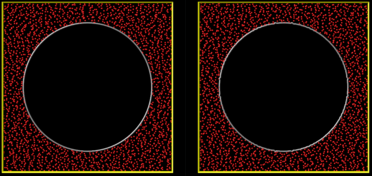
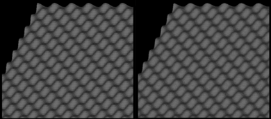
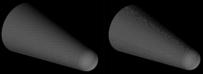
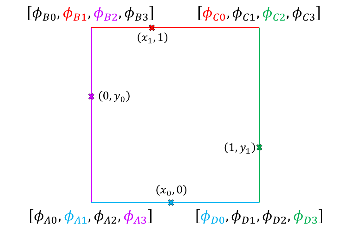
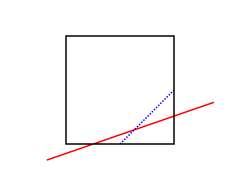
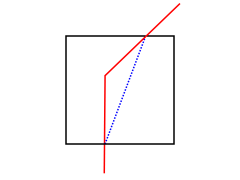
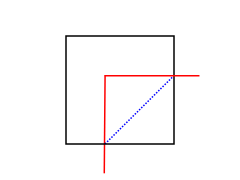
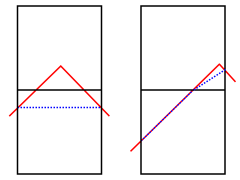

create_isurf command
Syntax:
create_isurf group-ID ablateID thresh mode ...
group-ID = grid ID for which grid cells to perform calculation on
ablateID = ID of a fix ablate command
thresh = threshold for corner values used to generate implicit surfaces, value > 0.0 and < 255.0
mode = inout or ave or multi
inout = mark corner points as either inside or outside surf voxel = assign corner point values based on local solid fraction ave = smooth values by averaging expected corner point values based on intersections between the explicit surfaces and cell edges multi = mark corners using multiple values (i.e. multivalues)
Examples:
create_isurf all fablate 40.0 inout
create_isurf subset fablate 100.0 ave
Description:
This command converts all currently defined explicit surface elements to implicit surface elements. One motivation for this operation is that implicit surfaces can be ablated over time via the fix ablate command. See the How to 6.13 section of the manual for an explantion of explicit versus implicit surfaces.
Explicit surface elements are triangles in 3d or line segments in 2d. They are enumerated in a file, read by the read_surf command. Implicit surface elements are also triangles or line segments. However each element is contained within a single grid cell.
A related command which defines implicit surfaces is the read_isurf command which reads a file of corner point values defined on a 2d or 3d grid, which is mapped to (a portion of) the SPARTA grid. It then calculates appropriate implicit line segments or triangles within each grid cell based on its 4 or 8 corner points. See the read_isurf command for details.
This command derives the 2d or 3d grid of corner point values from the set of explicit surface elements, rather then reading them from a file (Hong24). It then proceeds similarly to the read_isurf command where implicit line segments or triangles within each grid cell are calculated from the 4 or 8 corner points of the cell. When the process is complete, all explicit surfaces are removed from the simulation. This is because SPARTA does not currently allow both implicit and explicit surfaces to simulataneously exist. The read_isurf doc page has additional information about using implicit surfaces in a simulation, which also apply to this command.
IMPORTANT NOTE: As for the read_isurf command, all implicit triangles (line segments in 2d) created within the same grid cell are assigned the same surface ID, which is the grid cell ID.
Here are 3 pairs of images for a 2D circle, a 3D idealized bumpy surface, and a 3D cone. For each pair, the image on the left is the explicit surface composed of line segments or triangles. The image on the right is the corresponding implicit surfaces created by this command. Click on each image for a larger version:






The specified group-ID must be the name of a grid cell group, as defined by the group grid command, which contains a set of grid cells, all of which are the same size and comprise a contiguous 3d array with extent Nx by Ny by Nz. For 2d simulations, Nz must be specified as 1, and the group must comprise a 2d array of cells that is Nx by Ny. These are the grid cells within which implicit surfaces will be created. It is important that the specified group of grid cells wholly contain the explicit surfaces as explained in the next paragraph.
IMPORTANT NOTE: The aggregate set of implicit surfaces created by this command must represent a watertight object(s), the same as explained for the read_surf command, otherwise SPARTA will generate an error. The marching cube and square algorithms guarantee this (see the read_isurf doc page for details). However, if the Nx by Ny by Nz array of grid cells is interior to the simulation box, the entire outer boundary of the grid cell array should not be intersected by an explicit surface element. Otherwise a non-watertight surface will typically result. If the array of grid cells touches a simulation box face, then this is not a requirement (the same as if a set of explicit surfs were clipped at the box boundary). However, if a boundary is periodic in a particular dimension and the array of grid cells touches that boundary, then you must insure the Nx by Ny by Nz grid of cells spans that entire dimension. And if any explicit surfaces intersect that boundary, both periodic boundaries must be intersected in the identical manner. E.g. if the y dimension is periodic, the any intersection by one or more explicit surfaces of the ylo boundary must also occur at the yhi boundary, with identical x and z coordinates for each intersection. Otherwise the aggregate set of induced implicit surfaces will not be consistent across the y periodic boundary.
The specified ablateID is the fix ID of a fix ablate command which has been previously specified in the input script. It will store the grid corner point values for each grid cell. It also has the code logic for converting grid corner point values to surface elements (line segments or triangles) and also optionally allows for the surface to be ablated during a simulation due to particles colliding with the surface elements.
As with the "read_isurf" command, the algorithm to create the implicit surfaces requires a threshold value as input, which is the thresh value. For corner point values that bracket the threshold, it determines precisely where in the grid cell the vertices of the inferred implicit surface elements will be.
The threshold must be specified as a floating point value such that 0 < thresh < 255.
This command can be used in an axisymmetric domain (see the dimension and boundary commands). The explicit surfaces are then a body of revolution about the y = 0 symmetry axis, and the generated implicit surfaces may close on the axis, e.g. at the nose and base of a sphere-cone. Subsequent ablation via fix ablate uses the axisymmetric surface area of each surface element, so material recedes fastest where the incident flux is highest.
The specified mode can be either inout or ave. The inout mode sets corner point values to zero if they are outside the volume or area enclosed by the explicit surfaces. Conversely it sets corner point values to 255 if they are inside the volume or area. If the explicit surface exactly intersects a grid cell corner, the corner point is treated as outside (value = zero).
The voxel mode sets corner point values based on the local solid fraction. The solid fraction is defined as the proportion of the grid cell volume which is solid and is a value between 0 and 1. For a given corner point, the local solid fraction is the average solid volume of the cells adjoined by that corner point. Currently, the surface conversion, regardless of the option, assumes all grid cells are identical in size and shape. Thus, the average is taken as the sum of the solid fractions in each of the N surrounding cells divided by N. (The specific value of N is explained in the next paragraph.) The solid fraction is computed from the solid volume which is determined by the gas volume which is a per-grid cell quantity computed by SPARTA. That is, (solid volume) = (grid cell volume) - (gas volume) and (solid fraction) = (solid volume) / (grid cell volume)
Interior corner points (corner points not located on the domain boundaries) average over four cells in 2D and eight cells in 3D (N = 4 in 2D and N = 8 in 3D). If a corner point is on the domain boundary but not at one of the corners of the domain, the solid fraction is determined from two cells in 2D and four cells in 3D. Corner points located at the corners of the domain do not compute an average but use the solid fraction of the corresponding corner grid cell. With the solid fraction, the corner point is calculated as (corner point value) = (solid fraction) * 255.
The ave mode is meant to generate implicit surfaces which more precisely represent the explicit surfaces. As with inout mode, corner point values outside (or on) the surface are set to zero. For corner points which are inside the surface, each grid cell edge which connects the corner point to an outside corner point is treated as a line segment. In 2D, there are at most 4 such edges per corner point; in 3D, there are at most 6. Each cell edge is checked to see if it intersects an explicit surface element and at what position along the segment. If more than one surface element intersects the cell edge, only the intersection point closest to the inside corner point is considered. Using the intersection point and the specified thresh parameter, a value is assigned to the inside corner point which will induce an implicit surface element which passes through the intersection point. When multiple cell edges for the same inside corner point are intersected by explicit surface elements, the value assigned to the inside corner point is the average of the values computed for the individual cell edges.

The multi mode utilizes multivalues. Each corner stores 4 values in 2D and 6 values in 3D. For each cell edge, there are two multivalues located at two different corner values which determine the location of the vertex. For example, the location of the purple 'x' mark is determined by the third multivalue value in the top left corner and the fourth multivalue value in the bottom left corner. multi does not require averaging since all corner point values computed for each vertex can be stored. In general, multivalues distorts the surface less during the surface conversion.
NOTE: Regardless of which mode is used, implicit surfaces are an approximation to the original explicit surfaces. In particular:
The set of implicit surfaces cannot fully resolve features smaller than the size of the uniform grid cells used to overlay the triangulated object. Furthermore, neither the inout and ave mode produce implicit surface elements which conserve the normals of nearby explicit surface elements, so an exact match is often not possible. In general, defining a finer grid (shrinking the grid cell size) will give a better match of implicit surfaces to the original explicit surface elements.
If two adjoining explicit surfaces have different normal vectors, then there is effectively a discontinuous "kink" in the surface. If the kink occurs inside a grid cell, the implicit surface elements cannot reproduce it. This is because the 4 or 8 corner point values of a grid cell (and the thresh parameter) fully determine the implicit surfaces generated within that cell, and they are derived from the intersection of explicit surfaces with the faces of the grid cell.
The implicit surfaces created can be sensitive to the positioning of grid cell edges with respect to the explicit surfaces. Thus incrementing or decrementing Nx or Ny or Nz can change the resulting implicit surfaces in a non-continuous manner.
Examples of the effects of last two bullet points are illustrated in the following diagrams for 2d geomtries (similar effects occur in 3d).




In the images above, the explicit surface is represented by solid red lines whereas the generated implicit surface is dotted blue lines. The solid black lines are the outlines of grid cells. The leftmost diagram illustrates the 1st bullet point. The blue line cannot match the slope of the red line because the lower-right corner point is assigned a value which is the average of the two values which would be needed to match both intersection points of the red line with the grid cell edges. The next 2 diagrams with a single grid cell illustrate the 2nd bullet point above. The 2 diagrams with two grid cells illustrate the 3rd bullet point above. The pointy red object is truncated so there are no implicit surfaces in the top cell when the red apex is near the left-to-right middle of the grid cells. But there is almost no truncation (implicit surfs in both cells) when the apex is close to the vertical grid line.
Restrictions:
Explicit and implicit surfaces cannot be mixed in the same simulation. Thus, all explicit surfaces from all surface groups are converted into implicit surfaces, and no additional explicit surfaces can be added after this command is used.
This command can only be used after the simulation box is defined by the create_box command, and after a grid has been created by the create_grid command. Additionally, explicit surfaces must already be defined by the read_surf command. Simulations with implicit surfaces cannot perform grid adaptation.
The global surfs explicit/distributed command must be used before using the read_surf command which defined the explicit surfaces. This is because implicit surfaces are always distributed.
If particles already exist in the simulation along with the explicit surfaces, they will generally end up outside the implicit surfaces (in the flow volume) as well. In some cases, the generated implicit surfaces will reduce the flow volume slightly (for a particular grid cell). If this occurs any particles which were previously outside the explicit surfaces but are now inside the implicit surfaces are immediately deleted by this command.
Related commands:
read_surf, fix_ablate, write_isurf
Default:
none
(Hong24) A. Y. K. Hong, M. A. Gallis, S. G Moore, and S. J. Plimpton, "Towards physically realistic ablation modeling in direct simulation Monte Carlo," Physics of Fluids (2024).